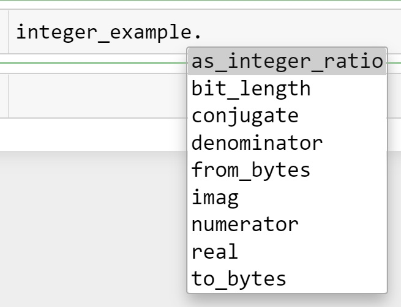

integer_example = 56 Object-Oriented Programming
In Python, everything is an object, which makes it an object-oriented programming language.
Object-oriented programming is the one in which a program is based on objects. An object is an independent entity within the program and can cooperatively work with other objects. A program can be made up of one or more objects, which can leverage the functionality and information contained in other objects.
6.1 Object
An object consists of two items:
Attributes - Attributes are the data stored within the object.
Methods - Methods are the functions defined within the object. Methods can use the object attributes (or data stored within the object) as well as accept additional data as arguments.
We have already seen several in-built python objects such as string objects, integer objects, float objects, list objects, tuple objects and dictionary objects, in previous chapters. Each of these objects have attributes and methods associated with them.
For example, consider a integer object named as integer_example.
The attributes and methods of this integer object can be seen by putting a . next to its name, and pressing the tab key. A dropdown menu consisting of the attributes and methods will appear as shown below.

A list of all attributes and methods associated with an object can be obtained with the dir() function. Ignore the ones with underscores - these are used by Python itself. The rest of them can be used to perform operations.
#This code is not executed to avoid printing a long list
dir(integer_example)For example, an attribute of integer_example is real, which contains the real part of the number:
integer_example.real5A example of a method of integer_example is as_integer_ratio(), which returns a tuple containing the numerator and denominator of the integer when it is expressed as a fraction.
integer_example.as_integer_ratio()(5, 1)Note that attributes do not have any parenthesis after them as they are just data, and cannot accept arguments. On the other hand methods have parenthesis after them as they are functions that may or may not have arguments.
6.2 Class
A class is a template for objects. It contains the attributes and methods associated with the object of the class. As an analaogy, the class Cat will consist of characterisitcs (or attributes) shared by all cats such as breed, fur color, etc., as well as capability to perform functions (or methods) such as run, meow, etc.
Instance: An instance is a specific realization of the object of a particular class. Continuing with the Cat analaogy of a class, a particular cat is an instance of the class Cat. Similarly, in the example above, the object integer_example is an instance of the class integer. The words object and instance are often used interchangeably.
Creating an instance of a class is called Instantiation.
6.2.1 Creating your own class
Until now we saw examples of in-built Python classes, such as integer, List, etc. Now, we’ll learn to create our own class that serves our purpose.
Below is a toy example of a class.
class ToyClass:
def __init__(self, x, y):
self.x = x
self.y = y
def add(self):
return self.x + self.y
def multiply(self):
return self.x*self.yWe’ll use the example above to explain the following terms:
The
classstatement: We use theclassstatement to create a class. The Python style guide recommends to use CamelCase for class names.The constructor (or the
__init__()method): A class typically has a method called__init__. This method is called a constructor and is automatically called when an object or instance of the class is created. The constructor initializes the attributes of the class. In the above example, the constructor accepts two values as arguments, and initializes its attributesxandywith those values.The
selfargument: This is the first argument to every method in the class. Whenever the class refers to one of its attributes or methods, it must precede them byself. The purpose ofselfis to distinguish the class’s attributes and methods from other variables and functions in the program.
The class ToyClass consists of two attributes x and y, a constructor __init__(), and two methods add() and multiply().
To create an object or instance of the class ToyClass, we’ll use the class name with the values to be passed as argument to the constructor for initializing the object / instance.
toy_instance = ToyClass(6,12)The x attribute of the class ToyClass can be called using the . operator with the object name:
toy_instance.x6To use the multiply() method of the class ToyClass, we’ll use the . operator with the object name:
toy_instance.multiply()726.2.2 Example: A class that analyzes a string
Let us create a class that analyzes a string.
class AnalyzeString:
#Constructor
def __init__(self, s):
s = s.lower()
self.words = s.split()
#This method counts the numebr of words
def number_of_words(self):
return (len(self.words))
#This method counts the number of words starting with the string s
def starts_with(self,s):
return len([x for x in self.words if x[:len(s)]==s])
#This method counts the number of words of length n
def words_with_length(self,n):
return len([x for x in self.words if len(x)==n])
#This method returns the frequency of the word w
def word_frequency(self,w):
return self.words.count(w)Let us create an instance of the class AnalyzeString() to analyze a sentence.
#Defining a string
sentence = 'This sentence in an example of a string that we will analyse using a class we have defined'#Creating an instance of class AnalyzeString()
sentence_analysis = AnalyzeString(sentence)#The attribute 'word' contains the list of words in the sentence
sentence_analysis.words['this',
'sentence',
'in',
'an',
'example',
'of',
'a',
'string',
'that',
'we',
'will',
'analyse',
'using',
'a',
'class',
'we',
'have',
'defined']#The method 'word_frequncy()' provides the frequency of a word in the sentence
sentnce_analysis.word_frequency('we')2#The method 'starts_with()' provides the frequency of number of words starting with a particular string
sentnce_analysis.starts_with('th')26.2.3 Practice exercise 1
Write a class called PasswordManager. The class should have a list called old_passwords that holds all of the user’s past passwords. The last item of the list is the user’s current password. There should be a method called get_password that returns the current password and a method called set_password that sets the user’s password. The set_password method should only change the password if the attempted password is different from all the user’s past passwords. It should either print ‘Password changed successfully!’, or ‘Old password cannot be reused, try again.’ Finally, create a method called is_correct that receives a string and returns a boolean True or False depending on whether the string is equal to the current password or not.
To initialize the object of the class, use the list below.
After defining the class:
Check the attribute
old_passwordsCheck the method
get_password()Try re-setting the password to ‘ibiza1972’, and then check the current password.
Try re-setting the password to ‘oktoberfest2022’, and then check the current password.
Check the
is_correct()method
past_passwords = ['titanic1911','ibiza1972','montecarlo799']class PasswordManager:
def __init__(self,past_passwords):
self.old_passwords = past_passwords
def get_password(self):
return self.old_passwords[len(self.old_passwords)-1]
def set_password(self,new_password):
if new_password not in self.old_passwords:
self.old_passwords.append(new_password)
print("Password changed!")
else:
print("Old password cannot be reused, try again.")
def is_correct(self,password):
if password == self.old_passwords[len(self.old_passwords)-1]:
return True
return False
passwd = PasswordManager(past_passwords)6.3 Inheritance
In object-oriented programming there is a concept called inheritance where we can create a new class that builds off of another class. The new class gets all of the variables and methods of the class it is inheriting from (called the base class). It can then define additional variables and methods that are not present in the base class, and it can also override some of the methods of the base class. That is, it can rewrite them to suit its own purposes. Here is a simple example:
class Parent:
def __init__(self, a, b):
self.a = a
def method1(self):
return self.a+' should study!'
def method2(self):
return self.a+' does not study enough '
class Child(Parent):
def __init__(self, a,b):
self.a = a
self.b = b
def method1(self):
return self.a+' should play with ' + self.b
def method3(self):
return self.a + ' does not play enough'Note that when inheriting from a class, we indicate the parent class in parentheses in the class statement.
We see that method1 is present in both the Parent and Child classes, while method2 is only present in the Parent class. Let us understand how does the Child class use the methods of the Parent class, and what happens if a method with the same name is present in both the parent and child classes.
p = Parent('Sam', 'John')
c = Child('Sam','Pam')
print('Parent method 1: ', p.method1())
print('Parent method 2: ', p.method2())
print()
print('Child method 1: ', c.method1())
print('Child method 2: ', c.method2())
print('Child method 3: ', c.method3())Parent method 1: Sam should study!
Parent method 2: Sam does not study enough
Child method 1: Sam should play with Pam
Child method 2: Sam does not study enough
Child method 3: Sam does not play enoughWe see in the example above that the child has overridden the parent’s method1. The child has inherited the parent’s method2, so it can use it without having to define it. The child also adds some features to the parent class, namely a new variable b and a new method, method3.
6.3.1 Practice exercise 2
Define a class that inherits the in-built Python class list, and adds a new method to the class called nunique() which returns the number of unique elements in the list.
Define the following list as an object of the class you created. Then:
Find the number of unique elements in the object using the method
nunique()of the inherited class.Check if the
pop()method of the parent class works to pop an element out of the object.
list_ex = [1,2,5,3,6,5,5,5,12]class list_v2(list):
def nuinque(self):
unique_elements = []
for x in self:
if x not in unique_elements:
unique_elements.append(x)
return len(unique_elements)
list_ex = list_v2(list_ex)
print("Number of unique elements = ", list_ex.nuinque())
print("Checking the pop() method, the popped out element is", list_ex.pop())Number of unique elements = 6
Checking the pop() method, the popped out element is 126.3.2 Practice exercise 3
Define a class named PasswordManagerUpdated that inherits the class PasswordManager defined in Practice exercise 1. The class PasswordManagerUpdated should have two methods, other than the constructor:
The method
set_password()that sets a new password. The new password must only be accepted if it does not have any punctuations in it, and if it is not the same as one of the old passwords. If the new password is not acceptable, then one of the appropriate messages should be printed - (a) Cannot have punctuation in password, try again, or (b) Old password cannot be reused, try again.The method
suggest_password()that randomly sets and returns a password as a string comprising of 15 randomly chosen letters. Letters may be repeated as well.